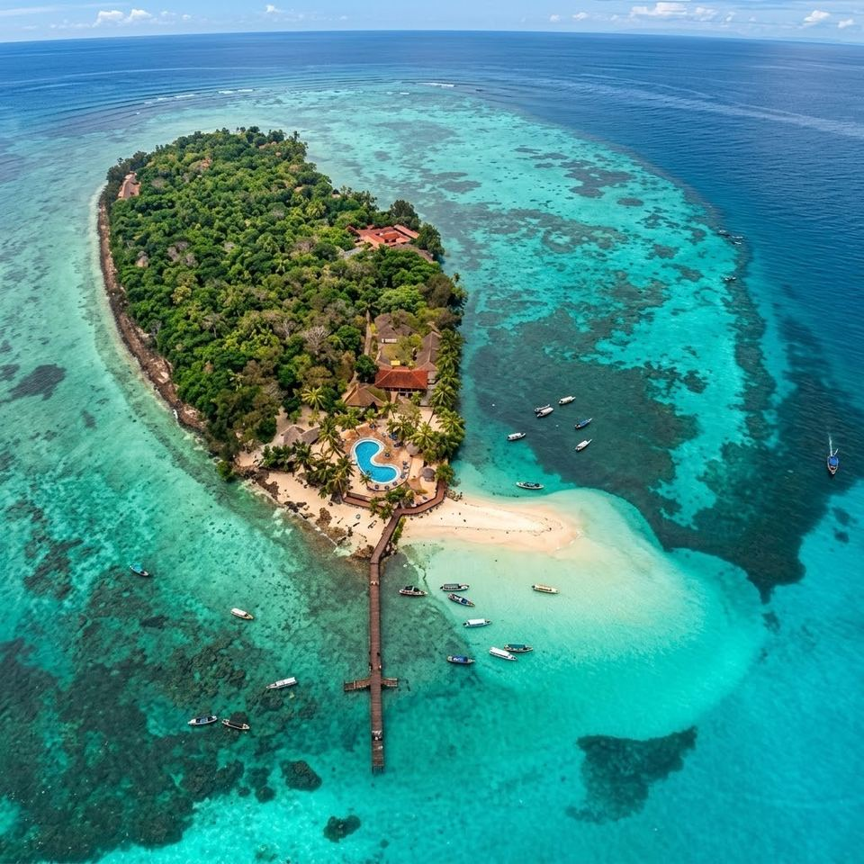
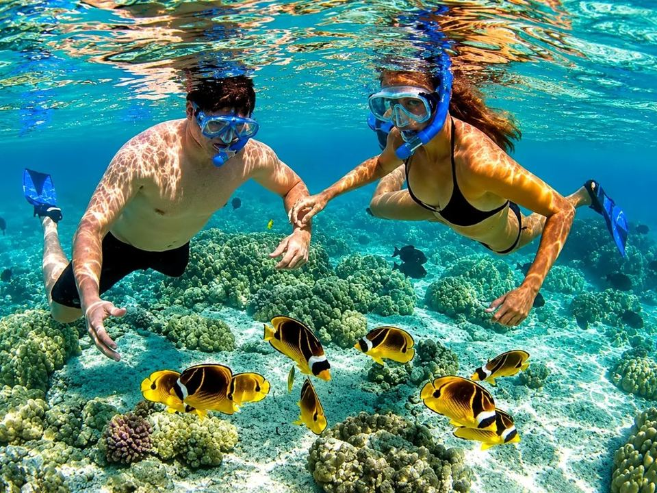
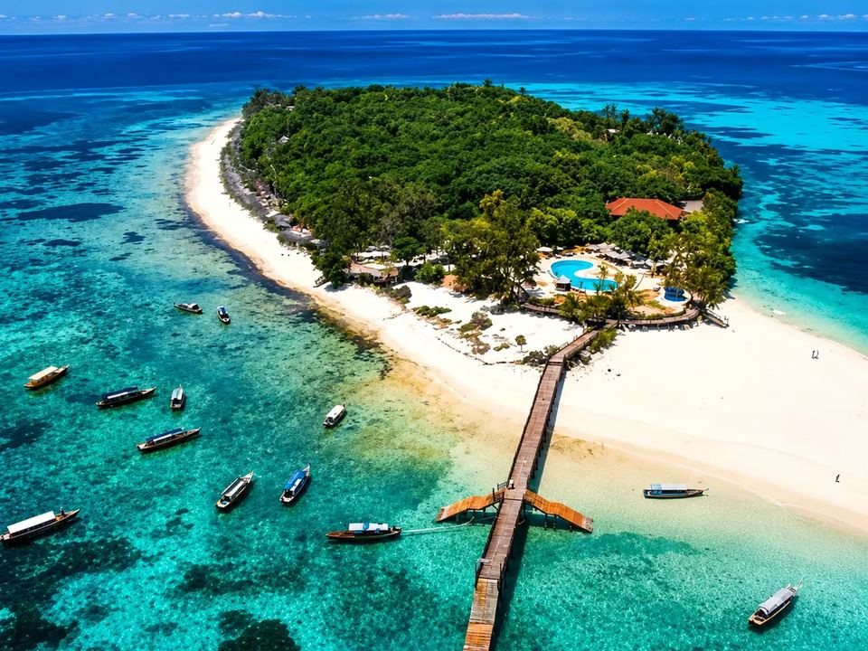

Prison Island
$20 · TSh 50,000 · 2 hrs · no food
- Private boat for up to 7 guests with One Heart Captain
- Giant tortoises & Prison Island (Changuu) history
- Departs Stone Town Harbour · food is extra if you want lunch
Stone Town Harbour · Zanzibar, Tanzania
Captain Salum Idy · Prison Island & Nakupenda Beach private boat trips.
Official site · oneheartcaptain.com
One Heart Captain is Captain Salum Idy’s boat service from Stone Town Harbour to Prison Island (Changuu) and Nakupenda Beach. Search “One Heart Captain” or “Captain Salum Zanzibar” — this is the place to book.

$20 · TSh 50,000 · 2 hrs · no food

$20 · TSh 50,000 · no food

$40 · TSh 100,000 · photos only · no food
Meeting point for every One Heart Captain booking. GPS approx. -6.1659, 39.2026. Exact jetty confirmed on WhatsApp after you book.
Also called Changuu Island. Giant Aldabra tortoises, colonial history, clear water. One Heart Captain runs private boats here from $20.
Tidal sandbank for swim, snorkel and photos. Book the sandbank alone or as a combo with Prison Island through oneheartcaptain.com.
The captain · One Heart Captain
One Heart Captain is led by Captain Salum Idy — a trusted boat captain from Stone Town who guides guests to Prison Island and Nakupenda Beach with safety and Swahili hospitality.
Every journey begins with a warm smile and a commitment to safety, professionalism and genuine Swahili hospitality. As his boat glides from Stone Town, guests see crystal-clear ocean views while learning the culture that makes Zanzibar captivating.
At Prison Island — once linked to quarantine and colonial history — visitors meet giant Aldabra tortoises and peaceful shores. Salum makes time for both the history and the wildlife.
Nakupenda Beach is a sandbank that appears at low tide and slips back under the sea. The name means “I love you.” Powdery white sand, warm turquoise water, swimming, snorkeling, or fresh seafood by the sea — he works so a boat ride becomes a memory.
If you searched One Heart Captain, Captain Salum Tours, or oneheartcaptain.com, you are in the right place to book.
Call or WhatsApp: +255 774 726 129
One Heart Captain is Captain Salum Idy’s official boat tour brand and website (oneheartcaptain.com) for private trips from Stone Town to Prison Island and Nakupenda Beach, Zanzibar.
Yes. One Heart Captain and Captain Salum Tours are the same service operated by Captain Salum Idy. This website is the official booking page.
Boat only. No food. Tickets and meals are extras you can add when booking with One Heart Captain.
Food is a separate price. Choose a meal package in the booking form on oneheartcaptain.com.
Stone Town Harbour, Zanzibar, Tanzania. One Heart Captain confirms the exact meeting point on WhatsApp after booking.
Use the booking form below or WhatsApp +255 774 726 129. Search “One Heart Captain” anytime to return here.
0774 726 129
Private boat · Stone Town → Prison Island / Nakupenda · Captain Salum Idy